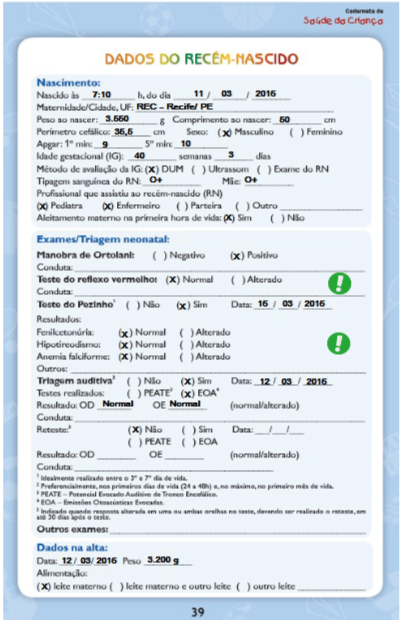

- Leonardo Pires dos Santos
- santos.leonardo2@hotmail.com

Avaliação de Rotina
Arthur, 5 meses de vida, aleitamento materno exclusivo segue para a quinta consulta de puericultura na mesma USF onde sua mãe fez o pré-natal.Ele é o caçula de uma família com três filhos. A mãe é dona de casa e se dedica em tempo integral às crianças. O profissional que o acompanha os recebe, faz os cumprimentos habituais; observa o comportamento da criança e da mãe atento ao relacionamento estabelecido entre eles. Em seguida, verifica o prontuário do lactente, os dados da consulta anterior e conversa com mãe e filho para obter informações relativas aos focos de atenção que serão avaliados durante a consulta. Arthur não tem histórico de internações ou de doenças respiratórias. Solicita a Caderneta de Saúde da Criança e realiza exame físico da criança. Na avaliação do desenvolvimento o profissional observa que Arthur “conversa” muito, é “super” simpático, sorrir para todos, mas que não levanta a cabeça quando colocado de bruços e não segura objetos mesmo que por poucos segundos.
Dados da Consulta Atual:
Peso: 7580g Comprimento: 66cm Perímetro cefálico: 42,5 IMC - Será calculado na aba crescimento (IMC x Idade)
Teste de Ortolani ou Manobra de Ortolani
É um teste realizado no exame físico para investigação de displasia de quadril em recém-nascidos. Na posição supina e com a pelve estabilizada, a anca é fletida a 90º e suavemente abduzida enquanto os dedos indicador e médio do examinador seguram o grande trocanter e o polegar apoia na face interna da coxa.
Mais informações
Teste do Reflexo Vermelho (TRV, também conhecido como Teste do Olhinho)
O Teste do Olhinho pode detectar a catarata, o glaucoma congênito, e ainda qualquer patologia ocular congênita que cause opacidades de córnea, tumores intraoculares grandes, inflamações intraoculares importantes ou hemorragias intravítreas. Algumas cidades, como Florianópolis e Porto Alegre e estados brasileiros (Ceará, Mato Grosso, Mato Grosso do Sul, Minas Gerais, Paraná, Rio de Janeiro, Santa Catarina, São Paulo) e o Distrito Federal já têm legislação que exige a realização do Teste do Olhinho em todos os recém‐nascidos, antes de sua alta.
Mais informações
Teste do Pezinho
O Teste do Pezinho deve ser realizado a partir de 48 horas de vida do bebê até uma semana de seu nascimento. Dentre as patologias triadas estão: Fenilcetonúria, Hipotireoidismo Congênito, Anemia Falciforme e outras Hemoglobinopatias e Fibrose Cística.
Teste do Coraçãozinho ( também conhecido como oximetria de pulso)
O teste deve ser feito na maternidade, entre 24 e 48 horas após o nascimento. O procedimento é simples, rápido e indolor que pode identificar cardiopatias críticas. Consiste em medir a oxigenação do sangue e os batimentos cardíacos do recém nascido com o auxílio de um oxímetro espécie de pulseirinha instalado nos primeiros dias de vida no pulso e no pé.
Mais informações